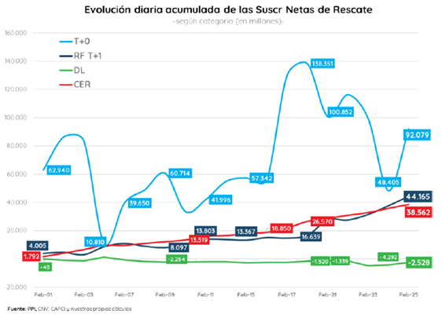

Según datos provistos por los analistas de Criteria, el patrimonio bajo administración de los FCI supera los $3,8 billones. Esto implica un crecimiento del 7% en el mes, y del 12% en el acumulado del año. Es decir, crece por encima de la inflación del año que suma 8,8% en los primeros dos meses del año.
Por otro lado, los $3,8 billones que administran los FCI ya se ubican por encima de los $3,7 billones correspondientes a la base monetaria.
Medidos en dólares, los fondos ya administran u$s 19.000 millones.
Los analistas de Portfolio Personal Inversiones (PPI) remarcaron que, en moneda dura, y con la baja de los dólares financieros, el crecimiento de los activos bajo administración de los FCU fue del 16% alcanzando un monto administrado de unos u$s 19.000 millones.
"Estamos en niveles similares previo a las PASO de 2019, pero lejos de los máximos de u$s 34.000 millones de marzo 2018", dijeron desde PPI.
En cuanto a la composición de los fondos comunes de inversión, se observa una salida de flujos de los fondos de cobertura devaluatoria y money market para ir a los fondos T+1. En concreto, hacia los fondos CER
Esto se da en medio de un contexto deaceleración inflacionaria y en donde los inversores buscan refugiarse en deuda CER.
La inflación de febrero fue 4,7%, por encima de lo esperado y acumula 8,8% en el primer bimestre del año.
Sergio González, analista de Criteria y especialista en fondos comunes de inversión, resalta el flujo que están observando los FCI CER.
"Los fondos CER son una aspiradora de pesos. Lo que sale de cobertura de devaluación y money market se va a FCI CER. Parece que la industria cree que hay pax cambiariaunos meses", estimó el especialista de Criteria.
Actualmente, los fondos de Liquidez Inmediata (money market) explican el 48% del market share total, mientras que los fondos de renta fija crecen y ya representan el 37% de la industria.
Rodrigo Benítez, economista jefe de MegaQM, afirmó que la emisión monetaria de fin de 2021 dejó un mercado líquido que, sumado a los controles de capitales, busca opciones de inversión en pesos.
"Por ahora, el apetito del mercado se focaliza en el corto plazo o solamente en instrumentos con ajuste por inflación. El dato de febrero, con una inflación de 4,7% mensual y la expectativa de que marzo se mantenga en esos valores o aún superiores, confirma esa predilección por los activos CER", dijo.
"Desde la industria de FCI esto se ve como un incremento en el spread entre el rendimiento de los fondos money market y los T+1. La respuesta de los inversores a estos incentivos es un mayor flujo hacia fondos T+1 que tienen bonos del Tesoro en su cartera. En definitiva, aumenta la demanda y es lo que explica la buena performance de las licitaciones del Tesoro en lo que va del año", agregó.
Sobre este punto, desde PPI advirtieron que febrero fue el cuarto mes consecutivo en el que la tasa de crecimiento del patrimonio neto en money market (+7%) aumentó por debajo de los de Renta Fija (+8%).
"La preferencia por los fondos CER se mantiene, y puede verse reflejado en los flujos", dijeron desde PPI.
El mercado sigue suscribiendo fondos comunes de inversión money market. Sin embargo, lo que se observa es que el ritmo de suscripciones ha caído por debajo de su promedio y dicho espacio fue ocupado por los FCI CER.
"De los más de $198.000 millones de suscripciones netas que recibió la industria en el último mes, el 20% y 22% fue captado por fondos "CER" y "Renta Fija en Pesos T+1", respectivamente. Los money market, si bien recibieron el 55%, el porcentaje se colocó por debajo del promedio mensual de 2021, que sin contar las salidas estacionales en diciembre fue del 60% promedio", explicaron desde PPI.
Lucas Longo, estratega de Research Mariva, proyecta que la demanda de deuda CER va a seguir siendo elevada en los meses siguientes.
"Como no vemos que vaya a haber un cambio sustancial en la política monetaria, ergo movimiento más acelerado del tipo de cambio y suba más contundente en tasas del Banco Central, el mercado va a seguir priorizando la deuda CER sobre el resto", estimó.
Además, aclaró que "los datos de inflación, que esperamos sigan subiendo durante el segundo semestre del año, mal que bien ayudan a que el mercado suscriba en las licitaciones sobre la deuda indexada, y como no percibimos un riesgo material de default en el corto plazo, creemos que el Tesoro va a seguir teniendo el mismo nivel de participación en las licitaciones", afirmó.
Fuente El Cronista